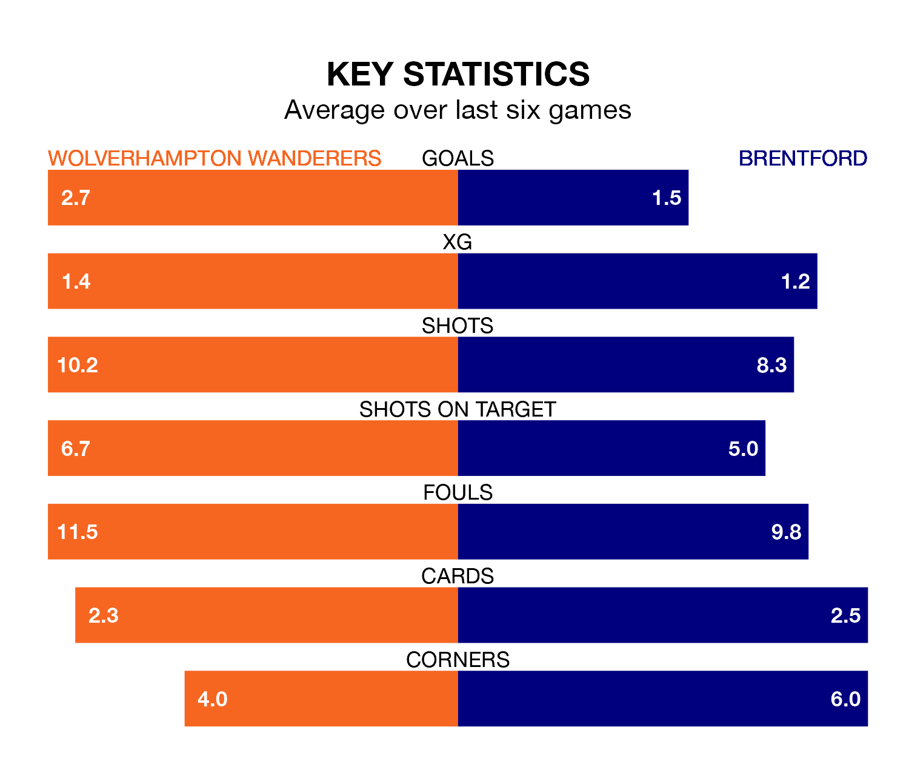

Brentford come to the Molineux Stadium to play Wolverhampton Wanderers on Saturday in poor form, having collected just three points from their last six games.
The visitors have won just one of their last six fixtures, while Wolves have four wins and a draw.
In the last 10 years, Wolves and Brentford have played each other on 16 occasions. Wolves won nine of them, Brentford four, and they drew three times.
On average, Wolves scored 1.6 goals and the Bees 1.2 in those matches.
Their last meeting was on January 16, when Wolves won 3-2 at home.
With 32 goals in 22 games so far this season, Brentford are scoring at below the league average rate with 1.5 goals per game. And they are conceding more than average, letting in 39 goals at a rate of 1.8 per game.
Wolves, meanwhile, are average scorers, with 1.6 goals per game. They have also conceded 1.6 goals per game.
The Bees are 16th in the table after 22 games, of which they have won six and drawn four, earning 22 points.
The home team are six places ahead of the visitors in 10th, with nine wins and five draws putting them on 32 points.
In Hee-Chan Hwang, Wolves have one of the league's most on-form strikers so far this season. He has notched 10 goals in 20 appearances, to sit seventh in the scoring charts.
His goal rate of one every 145 minutes is quicker than that of Bryan Mbeumo, Brentford's top scorer with a goal every 184 minutes, and a total of seven goals in 15 games.
Wolves's last match was on Sunday, a 4-2 win against Chelsea, with Matheus Cunha (three) and Axel Disasi (own goal) getting the goals for Wolves.
Brentford lost 3-1 against Manchester City last time out, on Monday, with Neal Maupay on the scoresheet.
Saturday's match will be refereed by Simon Hooper, who has taken charge of 14 Premier League games so far this season, issuing three red cards and booking 71 players. He has not awarded any penalties.
The last Wolves game Hooper refereed was a 1-0 away loss to Manchester United on August 14. His last Brentford match was their 2-0 win away at Chelsea on October 28.
Updated: 11:43 (UTC), 08/02/24